2
→
▶
2
→
▶
『ダーウィンズゲーム』予告【2027年3月12日（金）全国公開】
東映映画チャンネル · 146,049再生 · 公開 11/27
2
→
▶
東映映画チャンネル · 146,049再生 · 公開 11/27
 3
初登場
▶
3
初登場
▶
Capcom Fighters JP · 917,919再生 · 公開 11/27
 5
▲3
▶
5
▲3
▶
DMM TV ドラマ【公式】 · 51,324再生 · 公開 11/27
 6
▼3
▶
6
▼3
▶
日常組 · 502,828再生 · 公開 11/27
 8
初登場
▶
8
初登場
▶
しゃべんじゃーず · 13,736再生 · 公開 11/27
 9
初登場
▶
9
初登場
▶
HikakinGames · 1,413,911再生 · 公開 11/28
 11
▲6
▶
11
▲6
▶
ハヤトの野望 · 280,465再生 · 公開 11/27
 13
▼2
▶
13
▼2
▶
ドズル社 · 279,542再生 · 公開 11/27
 15
▼2
▶
15
▼2
▶
SHAKAch · 311,843再生 · 公開 11/27
 17
▼11
▶
17
▼11
▶
イブラヒム【にじさんじ】 · 1,373,528再生 · 公開 11/27
 18
初登場
▶
18
初登場
▶
MAZZEL · 110,368再生 · 公開 11/27
 19
▼10
▶
19
▼10
▶
TAMAchan · 221,055再生 · 公開 11/27
 21
▼6
▶
21
▼6
▶
Kuzuha Channel · 1,050,367再生 · 公開 11/27
 22
▼4
▶
22
▼4
▶
バーバパパ · 126,582再生 · 公開 11/27
 23
▼4
▶
23
▼4
▶
VTuver切り抜き隊 · 290,220再生 · 公開 11/27
 25
▼2
▶
25
▼2
▶
カラフルピーチ · 219,018再生 · 公開 11/27
 27
▲2
▶
27
▲2
▶
マエスケ · 240,103再生 · 公開 11/27
 29
▼8
▶
29
▼8
▶
びーの【にじさんじ切り抜き】 · 157,804再生 · 公開 11/27
 30
▼10
▶
30
▼10
▶
サカナクション sakanaction · 518,532再生 · 公開 11/26
 31
初登場
▶
31
初登場
▶
Pekora Ch. 兎田ぺこら · 481,890再生 · 公開 11/28
 33
初登場
▶
33
初登場
▶
蝶屋はなび / Choya Hanabi · 138,227再生 · 公開 11/27
 35
初登場
▶
35
初登場
▶
くろこのビクトリーロード · 145,586再生 · 公開 11/27
 37
初登場
▶
37
初登場
▶
Watame Ch. 角巻わため · 277,794再生 · 公開 11/28
 39
初登場
▶
39
初登場
▶
Oriensオリエンス【にじさんじ】 · 188,989再生 · 公開 11/28
 41
初登場
▶
41
初登場
▶
ブラックナイト山田 · 143,744再生 · 公開 11/27
 43
▼8
▶
43
▼8
▶
ポケモンソルジャー【ポケソル】 · 155,979再生 · 公開 11/27
 45
→
▶
45
→
▶
ピンポイント団 · 104,256再生 · 公開 11/27
 46
初登場
▶
46
初登場
▶
けいちゃん / Keichan · 70,437再生 · 公開 11/27
 47
初登場
▶
47
初登場
▶
布団ちゃん切り抜きMAX · 108,689再生 · 公開 11/27
 49
▼16
▶
49
▼16
▶
ホロライブ麻雀 -ホロじゃん- · 312,786再生 · 公開 11/27
 1
→
▶
1
→
▶
ジュニアCHANNEL · 168,498再生 · 公開 11/27
 4
初登場
▶
4
初登場
▶
SIXTONES - Topic · 57,825再生 · 公開 11/28
 7
初登場
▶
7
初登場
▶
Aぇ! group · 407,224再生 · 公開 11/26
 10
初登場
▶
10
初登場
▶
初星学園 · 209,880再生 · 公開 11/27
 12
▼8
▶
12
▼8
▶
APHRODITE GANG · 862,922再生 · 公開 11/26
 14
▼7
▶
14
▼7
▶
timelesz [タイムレス] · 1,940,584再生 · 公開 11/25
 16
▼6
▶
16
▼6
▶
G PLANTS Rolledman sacks · 151,681再生 · 公開 11/27
 20
▼6
▶
20
▼6
▶
DECO*27 · 383,882再生 · 公開 11/27
 24
▼12
▶
24
▼12
▶
桑田佳祐 · 308,464再生 · 公開 11/26
 26
▼10
▶
26
▼10
▶
Masayoshi Oishi - Topic · 127,254再生 · 公開 11/27
 28
初登場
▶
28
初登場
▶
Kis-My-Ft2 · 47,283再生 · 公開 11/27
 32
初登場
▶
32
初登場
▶
Ado · 278,519再生 · 公開 11/27
 34
▼12
▶
34
▼12
▶
Masato Hayashi · 245,514再生 · 公開 11/26
 36
初登場
▶
36
初登場
▶
SUPER DRAGON OFFICIAL · 35,702再生 · 公開 11/27
 38
▼14
▶
38
▼14
▶
XG · 413,795再生 · 公開 11/26
 40
▼14
▶
40
▼14
▶
松下洸平オフィシャルYouTubeチャンネル · 39,290再生 · 公開 11/27
 42
▼14
▶
42
▼14
▶
CUTIE STREET · 100,911再生 · 公開 11/26
 44
初登場
▶
44
初登場
▶
HIMEHINA Channel · 40,754再生 · 公開 11/27
 48
初登場
▶
48
初登場
▶
BIGBANG · 3,893,780再生 · 公開 11/25
 50
▼20
▶
50
▼20
▶
NAMEDARUMAAZ - Topic · 17,592再生 · 公開 11/26
 6000万回
6000万回
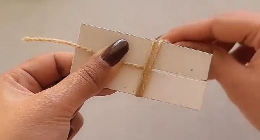
686万回www.famtimes.co.kr · 26 Nov
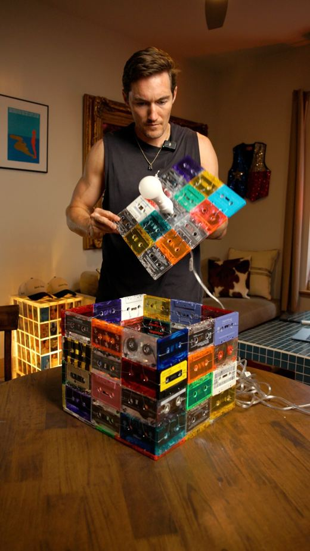
355万回 NEWニコニコニュース · 27 Nov · @trashboy_nyc ♥308,823
Yahoo!ニュース · 26 Nov
ライブドアニュース · 27 Nov
X · 27 Nov · @tagright_official ♥2,572
Excite エキサイト · 27 Nov
 38万回
38万回
Excite エキサイト · 26 Nov
Excite エキサイト · 27 Nov
ライブドアニュース · 26 Nov
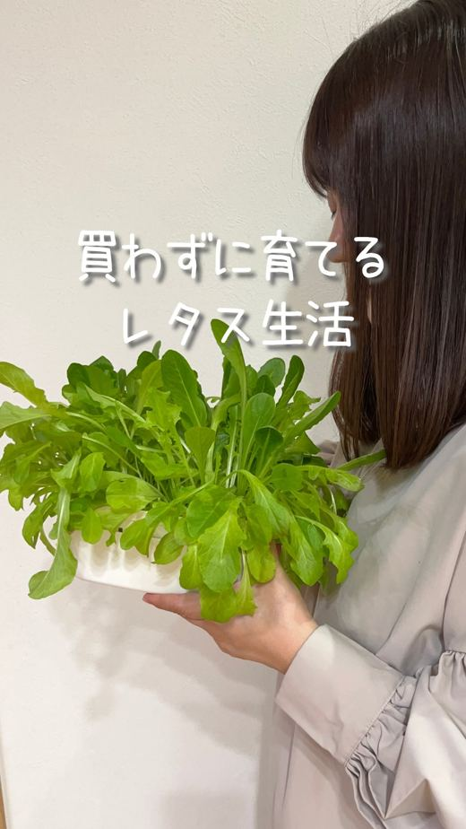
18万回 NEWYahoo!ニュース · 27 Nov · @haru_3kids_kosodate_ ♥2,175
ニコニコニュース · 27 Nov · @offprice_bigwood_official ♥1,607
au Webポータル · 27 Nov
PR TIMES · 27 Nov
ヨムーノ · 27 Nov
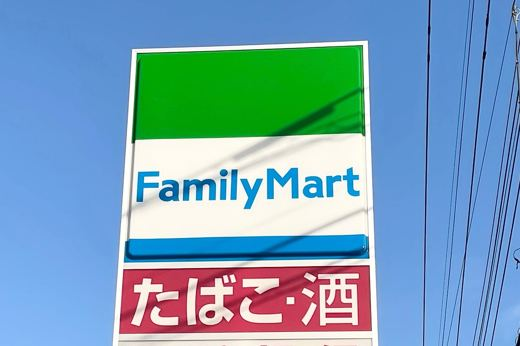
NEWYahoo!ニュース · 27 Nov
Yahoo!ニュース · 27 Nov
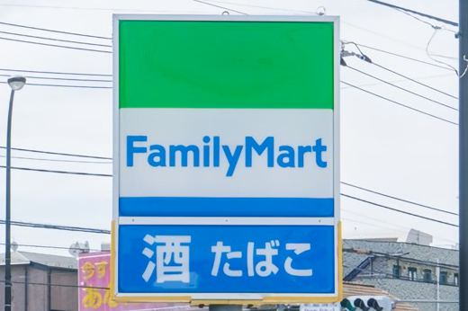
NEWBuzzFeed · 27 Nov
めざましmedia · 27 Nov
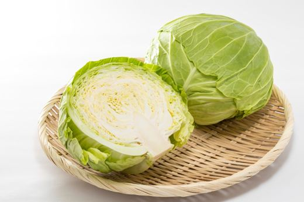
NEWオトナンサー · 27 Nov
ニコニコニュース · 27 Nov
美的.com · 27 Nov
Howl.Link · 27 Nov · @minase_sarara ♥1,755
TRILL · 27 Nov
MAQUIA · 27 Nov
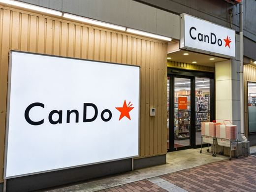
NEWTRILL · 27 Nov
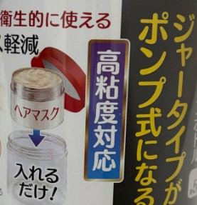
NEWYahoo!ニュース · 27 Nov
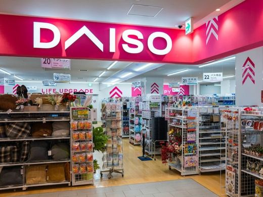
NEWｄメニューニュース · 27 Nov
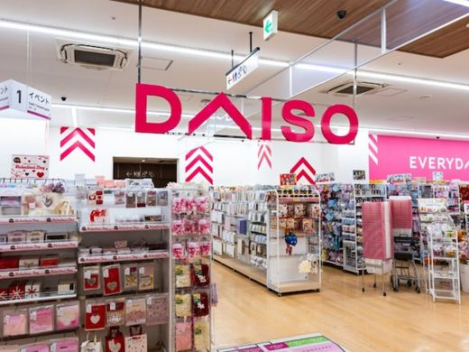
Excite エキサイト · 27 Nov
All About ニュース · 27 Nov
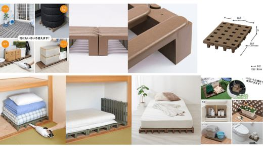
NEWニコニコニュース · 27 Nov
グローバルキッチン株式会社のプレスリリース 家庭で親しまれているメーカーの味を介護施設でも。新たな3社との連携に加え、既存コラボ
株式会社はらぺこのプレスリリース ── 大谷翔平、井上尚弥、反田恭平らに続く「世界を変える30歳未満」に、和菓子職人として初選出
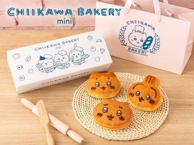
11/27 13:00 🗼 東京株式会社エルティーアールのプレスリリース 東京駅に直結した大丸東京店に“ちいかわのパン屋さん”がやって来る！ 株式会社 CLホ
株式会社シュクレイのプレスリリース スペイン製のダークチョコレートを使用したクリームをチョコレート風味のサクッとしたパイ生地でサ
株式会社マッシュホールディングスのプレスリリース ぬいぐるみやぬいチャーム等、セサミストリートの仲間たちがベアになりきったホリデ
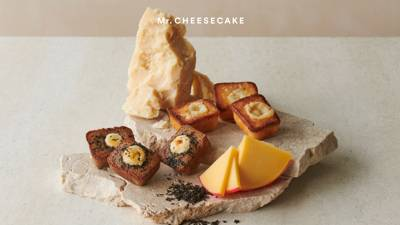
11/27 12:00 🗼 東京株式会社 Mr. CHEESECAKEのプレスリリース グランスタ限定パッケージは、「2026年新商品 東京駅限定手土産（スイー
タペストリー・ジャパン合同会社のプレスリリース エッグノッグやペパーミントモカなど、ニューヨークの冬を感じる季節限定の味わい ア
日本ピザハット株式会社のプレスリリース 【数量限定】描き下ろしイラスト使用のオリジナルA5クリアファイルがもらえる！！さらに、抽
横浜バニラ株式会社のプレスリリース CEO髙橋優斗とハローキティが登壇！12月5日(土)・6日(日)にJR東京駅「スクエア ゼロ
チロルチョコ株式会社のプレスリリース 2026年12月22日（火）より全国のローソン店舗で発売（ナチュラルローソン、ローソンスト
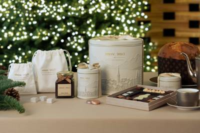
11/27 10:41 🗼 東京ジョルジオ アルマーニ ジャパン 株式会社のプレスリリース ※画像には、日本で取り扱いのない商品が一部含まれています。 Arma
ぴあ株式会社のプレスリリース 暮らす街がもっと好きになる、ジモト民のための町田グルメガイド 11月27日、ぴあ株式会社より、『ま
株式会社ローソンストア１００のプレスリリース 海苔からはみ出す揚げ物5種ののり弁と、ハンバーグ＆コロッケ×ナポリタンの丼が登場
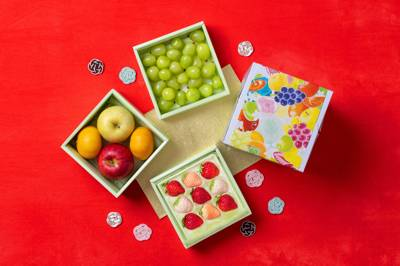
11/27 10:00 🗼 東京株式会社 船昌のプレスリリース https://ec.funasho-group.co.jp 株式会社船昌（本社：東京都大田区、
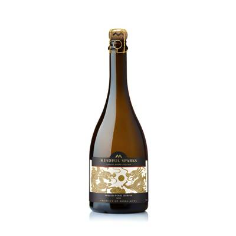
11/27 10:00 🗼 東京ふぶ株式会社のプレスリリース アルコール0%でも、同じボトル、同じグラスで。年末の乾杯に、誰ひとり欠けない一本を、300本限りで
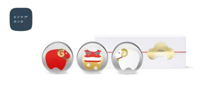
11/27 10:00 🗼 東京カンロ株式会社のプレスリリース ～縁起の良い紅白デザイン！お年賀にもぴったりな3缶セットも～ カンロ飴やピュレグミなどでおなじ
株式会社誠文堂新光社のプレスリリース 株式会社誠文堂新光社（東京都文京区）は、2026年12月4日（金）に、『ワタナベマキの だ
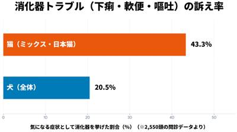
11/28 08:00 🚄 宮城アレミッケ｜5Strands Japan（ファイブストランド）のプレスリリース 〜935頭の実測値が覆す「鹿肉・新奇タンパク質神
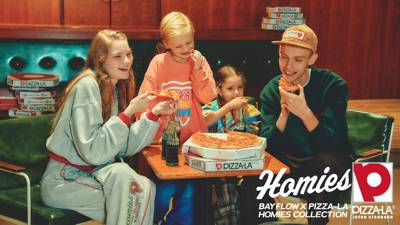
11/27 19:30 🚄 広島株式会社フォーシーズのプレスリリース 2026年11月27日（金）～12月13日（日） 株式会社フォーシーズ（本社：東京都港区
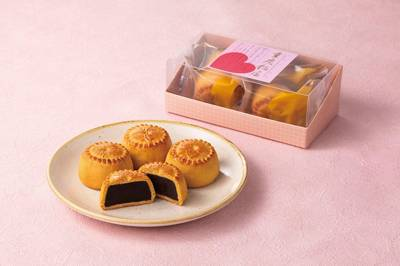
11/27 19:07 ❓ 不明株式会社 重慶飯店のプレスリリース 濃厚なカカオの香り広がる 株式会社重慶飯店（横浜市中区山下町185番地 代表取締役 李 宏道
株式会社櫟のプレスリリース 「ふんわりやわらか」から「もっちり、むぎゅ」へ。何度も試作を重ねてたどり着いた、生地のおいしさを楽し
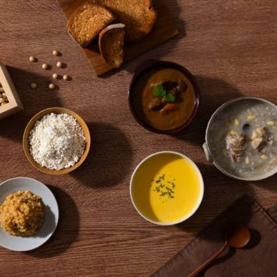
11/27 18:04 🚄 福島やまさ味噌こうじ店株式会社のプレスリリース 化学調味料、保存料を一切使用せず発酵パワーが生み出す、湯煎5分で楽しめる本格本格発酵
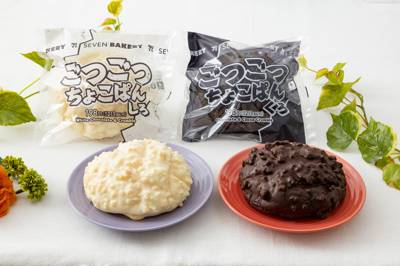
11/27 18:00 🌐 全国株式会社セブン‐イレブン・ジャパンのプレスリリース 〜今年も頑張った自分へ！手軽に味わえる「ご褒美パン」を12月1日（火）より全
株式会社主婦と生活社のプレスリリース 健康のものさしは、“減らす”から“摂る”へ。管理栄養士・エダジュンさん著書が、なぜ支持され
スペースシードホールディングス株式会社のプレスリリース タモギタケ由来のエルゴチオネインと酵素処理ヘスペリジンを、毎日のスープや
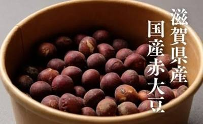
11/27 15:55 🚄 兵庫有限会社相沢食産のプレスリリース ～納豆の可能性を広げ、理想のカラダづくりを目指す人に新しい選択肢を提案～ 兵庫県神崎郡福崎町で
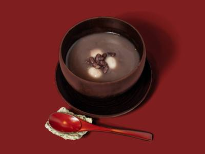
11/27 15:30 ❓ 不明株式会社山田屋のプレスリリース 一子相伝で磨き上げた自慢の餡を味わう冬季限定の一杯。茶楽でおくつろぎいただいたお客様へ、隣接店舗
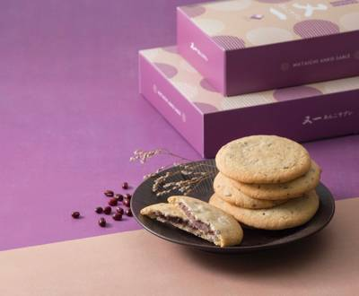
11/27 15:15 🚄 静岡有限会社又一庵のプレスリリース 創業より155年の歴史を誇る老舗和菓子店 有限会社又一庵(所在地：静岡県磐田市)は、新商品「又一
株式会社 小田急レストランシステムのプレスリリース スタートキャンペーンとして、１１月２９日（日）～１２月４日（金）はクレープ全
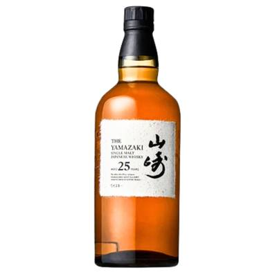
11/27 15:00 ❓ 不明株式会社アップライジングのプレスリリース 山崎25年・山崎18年・山崎シングルモルトが登場。1口7,980円（税込・送料無料）で
株式会社イートアンドホールディングスのプレスリリース ～人気の餃子・チャーハンの大容量セットが半額級！中華そばは180円の特別価
株式会社プレナスのプレスリリース 株式会社プレナスは、持ち帰り弁当の「Hotto Motto (ほっともっと)」を、2026年1
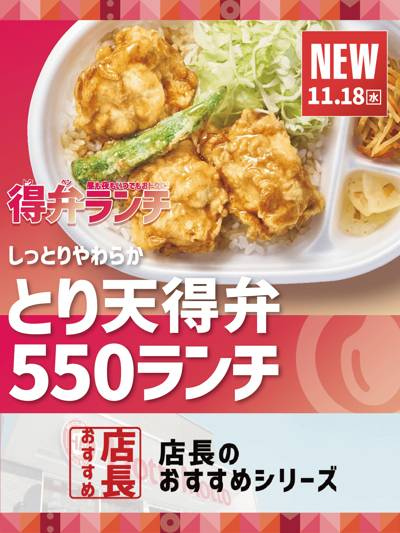
11/27 15:00 🌐 全国ほっともっとのプレスリリース 株式会社プレナスは、持ち帰り弁当の「Hotto Motto (ほっともっと)」を、2026年10月
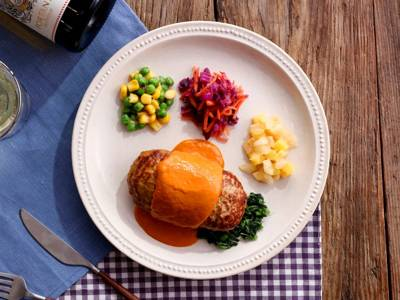
11/27 14:34 🚄 兵庫ナッシュ株式会社のプレスリリース 〜飽きずに・美味しく・楽しく健康的な食事を習慣化。新商品も続々と登場〜 当社は「毎日の生活を“
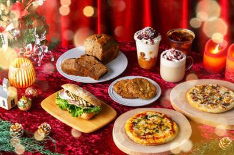
11/27 14:00 🚄 宮城猿田彦珈琲株式会社のプレスリリース 〜クリスマスパーティーを楽しむためのピザも一緒に〜 猿⽥彦珈琲株式会社（本社：渋⾕区／代表取
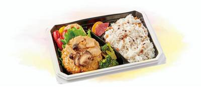
11/27 14:00 ❓ 不明東急株式会社のプレスリリース 株式会社東急ストア（本社：東京都目黒区）は、東急株式会社（本社：東京都渋谷区）が運営する東急病院（
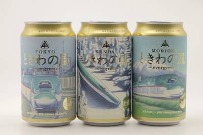
11/27 14:00 ❓ 不明有限会社二軒茶屋餅角屋本店のプレスリリース JR東日本クロスステーションとの4作目のコラボ。東京・仙台・盛岡を背景にした3デザイ
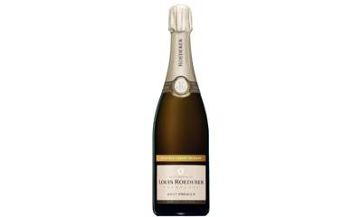
11/27 14:00 🚄 栃木アサヒビール株式会社のプレスリリース 国内自社セラーで約5年間熟成、深みと複雑さを増した味わいに エノテカ株式会社（本社：東
株式会社ベストホスピタリティーネットワークのプレスリリース フランスを代表する画家・ルノワールが描いた、日常に宿る幸福をテーマに
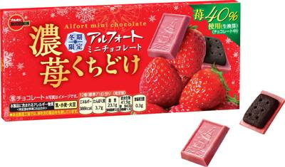
11/27 13:30 ❓ 不明株式会社ブルボンのプレスリリース 株式会社ブルボン(本社：新潟県柏崎市、代表取締役社長：吉田 匡慶)は、くちどけにこだわり、苺の
ほっともっとのプレスリリース 株式会社プレナスは、持ち帰り弁当の「Hotto Motto (ほっともっと)」を、2026年10月
熊本製粉株式会社のプレスリリース お菓子にもパンにも、楽しさ広げる玄米粉シリーズ 熊本製粉株式会社(所在地：熊本県熊本市、取締役
株式会社メリーチョコレートカムパニーのプレスリリース チョコレートをはじめとする贈答用菓子の製造、販売を手掛ける株式会社メリーチ
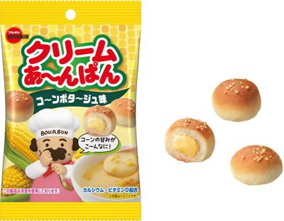
11/27 13:00 ❓ 不明株式会社ブルボンのプレスリリース 株式会社ブルボン(本社：新潟県柏崎市、代表取締役社長：吉田 匡慶)は、ひとくちサイズのかわいい
株式会社プレナスのプレスリリース 11.29(日)～12.7(月) 株式会社プレナスは、定食レストラン「やよい軒」を、日本国内
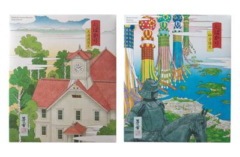
11/27 13:00 🚄 北海道株式会社久原本家のプレスリリース 久原本家グループ（福岡県糟屋郡久山町 社主：河邉哲司）は、「茅乃舎だし」など和風調味料を販売
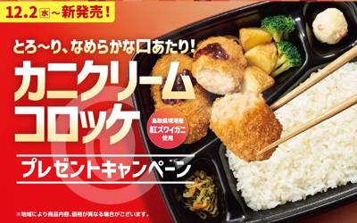
11/27 13:00 ❓ 不明株式会社プレナスのプレスリリース 11.29(日)～12.10(木)の期間開催 株式会社プレナスは、持ち帰り弁当の「Hotto
株式会社セブン‐イレブン・ジャパンのプレスリリース ～11月27日（金）は「五目春巻」、28日（土）は「アメリカンドッグ」、29
株式会社九十九島グループのプレスリリース [博多限定］木の実とバターを楽しめる人気の焼き菓子3種を 新年にふさわしい、華やかなパ
まねき食品株式会社のプレスリリース ONE PIECE新幹線「NEXT GEAR」始動を記念して2026年12月1日販売開始！
有楽製菓株式会社のプレスリリース 2026年12月1日(火)より全国のローソン店舗にて数量限定で発売(※) 有楽製菓株式会社（
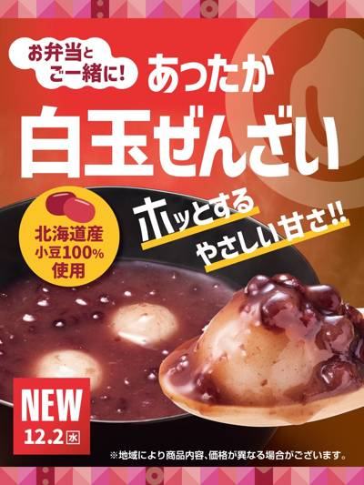
11/27 11:00 ❓ 不明株式会社プレナスのプレスリリース 12.2(水)より新発売 株式会社プレナスは、持ち帰り弁当の「Hotto Motto (ほっと
ほっともっとのプレスリリース 株式会社プレナスは、持ち帰り弁当の「Hotto Motto (ほっともっと)」を、2026年10月
辰巳出版株式会社のプレスリリース 八王子発「100円ラーメン」に学ぶ、人を集めて利益を生み出す経営術 『100円ラーメン経営術』
株式会社花恋人のプレスリリース MESSAGE de ROSE BY KARENDOが贈る、パステルカラーが彩る、夢色クリスマス
 11/27 10:00
🚄 京都
11/27 10:00
🚄 京都
株式会社グレープストーンのプレスリリース 2026年12月2日(水)～12月8日(火)まで期間限定登場 株式会社グレープストーン
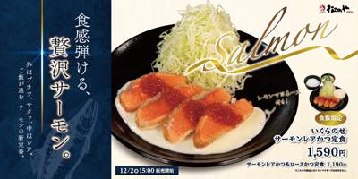
11/27 10:00 ❓ 不明株式会社松屋フーズホールディングスのプレスリリース 絶妙なレア加減のサーモンかつに、濃厚ないくらをたっぷりトッピング！ レモンマ
ジェイアール東海フードサービス株式会社のプレスリリース 2026年12月1日（火）～12月25日（金）の期間限定販売 ジェイア
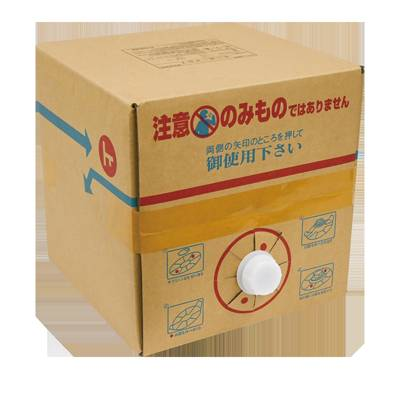
11/27 10:00 ❓ 不明フロイント産業株式会社(本社：東京都新宿区、代表取締役社長：伏島巖、以下「当社」)は、食品工場におけるモニリエラ菌対策の新たな選
株式会社アントワークスのプレスリリース 1日29食限定！12月24日（木）・25日（金）は数量限定なし！さらに、黒胡椒の刺激とニ
株式会社ほっかほっか亭総本部のプレスリリース 対象商品のご購入で、お得なクーポンが当たる「ありがとう50周年 スピードくじ」をプ
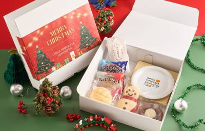
11/27 10:00 🌐 全国株式会社木村屋總本店のプレスリリース 11月27日(金)16:00より予約受付開始。 株式会社木村屋總本店（本社所在地：東京都江
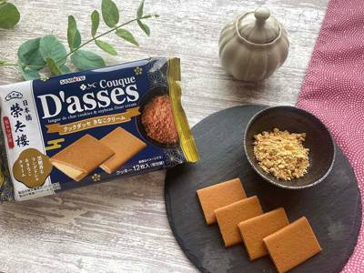
11/27 10:00 🚄 静岡株式会社榮太樓總本鋪のプレスリリース 株式会社 榮太樓總本鋪(東京都中央区日本橋、代表取締役社長：細田 将己) は、菓子メーカー
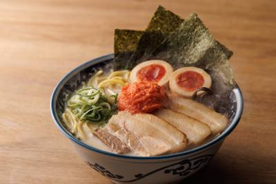
11/27 09:50 🚄 愛知株式会社エフリードのプレスリリース Instagram公式アカウントをフォローした方限定で、2026年12月1日(火)の1日限定
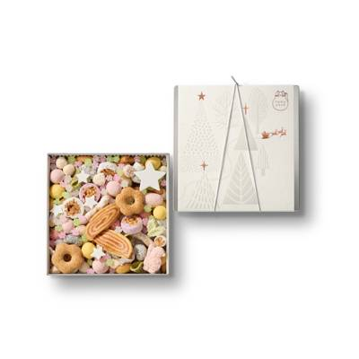
11/27 09:36 ❓ 不明株式会社ジョージオリバーのプレスリリース ～ サンタクロースや柊の和三盆が入った聖なる夜をイメージしたクリスマス限定商品～ 写真
日本ピザハット株式会社のプレスリリース 〜11月28日（土）〜30日（月）の3日間限定！お持ち帰り1,029円〜（イイオニク）の
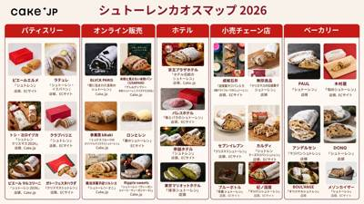
11/27 09:10 🌐 全国株式会社Cake.jpのプレスリリース 〜豪華なホテル商品から手軽な小売チェーンの商品まで、自分に合う一品の選べる〜 ケーキ・ス
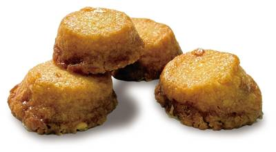
11/27 08:45 🚄 大阪バターを贅沢に使用した濃厚な風味とサクサク・ホロホロ食感。＆グーテ梅田阪急を除く全店舗にて販売しています。 大阪・兵庫を中心に店
 11/27 08:30
🚄 仙台
11/27 08:30
🚄 仙台
あさ出版のプレスリリース 6万部 突破 『バスが来ましたよ』 作者 由美村 嬉々 氏 最新刊！ 株式会社あさ出版（代表取締役：田
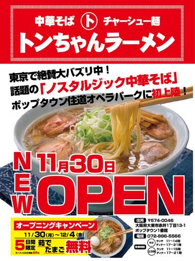
11/27 17:34 🗼 東京株式会社コズミックホールディングスのプレスリリース 『トンちゃんラーメン』が11月30日（月）、ポップタウン住道オペラパークに新
株式会社モンテローザのプレスリリース 2026年11月29日（日）・30日（月）の2日間限定！15時以降にご注文いただいた店内飲
株式会社オニオン新聞社のプレスリリース ～食べてまもろう、ちばの里山～ 千葉県内で捕獲され、県内の食肉処理加工施設で適切に処理・
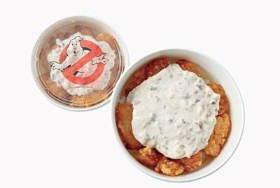
11/27 10:00 🗼 新宿株式会社にんべんのプレスリリース 株式会社にんべん(東京都中央区、代表取締役社長 髙津伊兵衛)は、だしの惣菜専門店「一汁旬菜 日
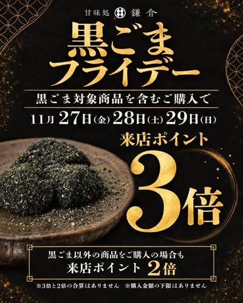
11/27 09:00 🗼 鎌倉株式会社 K&Sのプレスリリース 日頃より甘味処鎌倉をご愛顧いただき、心よりありがとうございます。 わらびもち専門店「
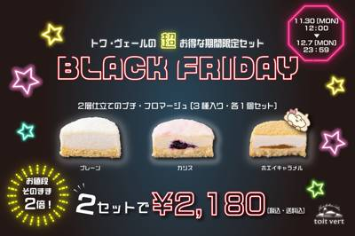
11/27 18:00 🚄 北海道株式会社フジタコーポレーションのプレスリリース 通常1箱2,180円（税込・送料込）の北海道産チーズケーキ3種セットが、8日間限
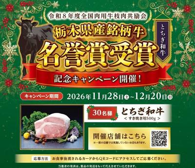
11/27 18:00 🌐 全国JA全農とちぎのプレスリリース 全国農業協同組合連合会栃木県本部（以下、JA全農とちぎ）は、10月30日(金)に開催された「令
株式会社パソナグループのプレスリリース 絶景オーシャンビューで淡路牛を堪能できるステーキレストラン「オーシャンテラス」では、メイ
ウェルネオシュガー株式会社のプレスリリース ウェルネオシュガー株式会社は、家庭で郷土料理を楽しむきっかけを届ける「おうちが、ふる
ウェルネオシュガー株式会社のプレスリリース 笠原将弘さんが考案した長野と新潟の郷土料理3品を公開 ウェルネオシュガー株式会社は、
全国農業協同組合連合会のプレスリリース ＪＡ全農が運営する産地直送通販サイト「ＪＡタウン」のショップ「広島とれたて元気市」では
「サステナブルレストランサミット 2026」にて受賞者を発表 一般社団法人 日本サステイナブル・レストラン協会（代表理事：下田屋
株式会社GENDA GiGO Entertainmentのプレスリリース GiGOグループのお店限定景品やコラボたい焼きが登場！
株式会社アークミールのプレスリリース しゃぶしゃぶどん亭は、11月29日の「いい肉の日」に合わせ、2026年11月28日（土）・
株式会社Mizkan Holdingsのプレスリリース ～TVCM放映に合わせ、SNS企画やインフルエンサータイアップも～ 株
レッドロブスタージャパン株式会社のプレスリリース タスマニアサーモンなどオセアニアの厳選食材を使用した冬季限定メニューが12月1
カッパ・クリエイト株式会社のプレスリリース ２０２６年１２月１日（火）～２０２７年１月３１日（日）の期間、かっぱ寿司にて コロ
モンスターエナジージャパン合同会社のプレスリリース 国内No.1エナジードリンク(※)のモンスターエナジーは、プロベースボール
株式会社ディーズプランニングのプレスリリース 最大3,840円もお得に！？毎日引ける！LINE会員限定『スーパー肉ガチャDAY』
エバラ食品工業株式会社のプレスリリース エバラ食品工業株式会社（本社：神奈川県横浜市、代表取締役社長：森村 剛士）は、11月29
株式会社出前館のプレスリリース 映画関連グッズやムビチケオンラインペアチケットなどが当たるキャンペーンを実施 株式会社出前館が
JA全農の産直通販JAタウンのプレスリリース ＪＡ全農が運営する産地直送通販サイトＪＡタウンのショップ「おきなわちゅら島」は、
全国農業協同組合連合会のプレスリリース ＪＡ全農が運営する産地直送通販サイトＪＡタウンのショップ「おきなわちゅら島」は、令和８
株式会社いいねのプレスリリース クリスマス限定パッケージの「いちごミルクのもと」やおやつパック、焼き菓子BOX、マグネット付きク
ハナマルキ株式会社のプレスリリース ～11/22（日）開催「MARCH対抗戦2026」にてキッチンカーを出店～ 味噌・醸造製品
株式会社メゾン・キツネ・ジャパンのプレスリリース 抹茶を中心とした限定メニューを提供 京都の老舗御菓子司とのコラボレーションも
株式会社ホットランドホールディングスのプレスリリース ～コラボたこ焼を購入で、オリジナル クリアカードもプレゼント！～ 築地銀
メルティングポットハラペコラボ株式会社のプレスリリース 食べる楽しみと、手元に残る小さなときめき。雪の結晶チャームを添えた、冬だ
ファーストキッチン株式会社のプレスリリース 福袋「ハッピーバッグ2027」の先行販売やオリジナルエコバッグを数量限定で配布！ ウ
株式会社味とサイエンスのプレスリリース スリランカ最古の紅茶ブランドが、阪急西宮ガーデンズの西宮阪急 1階に7日間のポップアップ
株式会社AOBEATのプレスリリース 横浜の港町文化とお茶を楽しむ、新しいティースタイルを提案。限定デザインの急須ボトルや茶葉の
株式会社栄通のプレスリリース 「プリロール」（株式会社栄通／東京都八王子市）は、『プロジェクトセカイ カラフルステージ！feat
日本ホテル株式会社のプレスリリース 新春の喜びを詰め込んだ特別な福袋です！ ホテルニューグランド（横浜市中区山下町10番地／総支
マリオット・インターナショナルのプレスリリース ワゴンで運ばれる本格点心や香港伝統菓子 を1日20食限定で 都会のウェルネスホテ
株式会社 小田急レストランシステムのプレスリリース 株式会社小田急レストランシステム（本社：東京都渋谷区、代表取締役社長：深海
生活クラブ事業連合生活協同組合連合会のプレスリリース 子育て世代の献立と調理の負担を軽減、忙しい家庭の食卓を支えたと評価 生活ク
マイボイスコム株式会社のプレスリリース ＜＜ TOPICS ＞＞ ■飲食物のデリバリーサービスを利用する人は3割強。そのうち、直
株式会社シンクロ・フードのプレスリリース 〜居抜き物件の平均月額賃料は18.1％上昇、1物件あたりの平均問い合わせ数は通常物件の
株式会社ひらまつのプレスリリース 東京・代官山で培った食と空間へのこだわりを生かし、地域に根づくカフェを展開 「カフェ・ミケラン
株式会社ロイヤルホテルのプレスリリース 販売期間：2027年1月6日（水）～3月31日（水） リーガロイヤルホテル東京（東京都
株式会社 資生堂パーラーのプレスリリース 公式サイト：https://parlour.shiseido.co.jp/ 「資生堂パ
首都高速道路サービス株式会社のプレスリリース 2026年12月1日（日）から2027年2月28日（金）まで首都高6PAで「温活」
株式会社ツカダ・グローバルホールディングのプレスリリース ■開催期間：2027年1月9日（土）～3月14日（日）の特定日 ※開催
相鉄ホテル株式会社のプレスリリース 雄と雌、二つの味わいを一杯ずつ楽しむ初開催の14日間限定コース日本料理「木の花」にて 202
グラフィック・パッケージング・インターナショナル株式会社のプレスリリース 〜国内市場においてはソフトドリンク分野の脱プラ・ラベル
株式会社大庄のプレスリリース 株式会社大庄（東京都大田区／代表取締役社長：平了壽）は、浜焼き海鮮居酒屋『大庄水産』22店舗で、2
森永製菓株式会社のプレスリリース オンライン予選は12月26日（土）に開催 オフライン決勝大会は2027年2月27日（土）に東京
野村不動産ホテルズ株式会社のプレスリリース ― 12月8日（火）からは、旬の食材を使った冬限定の特別メニューもスタート ― 本ニ
株式会社モンテローザのプレスリリース 11月29日（日）・30日（月）の2日間限定！秋葉原駅前の「魚民」「秋葉原ホルモン おいで
株式会社ベイクルーズのプレスリリース 株式会社ベイクルーズ（本社：東京都渋谷区、取締役社長：古峯 正佳）が運営する「DIGS（デ
株式会社シェアダインのプレスリリース 料理人と飲食事業者をつなぐ総合サービス「CHEFLINK（シェフリンク）」を提供する株式会
大福株式会社のプレスリリース 一つの単純作業から広がる可能性。障害者の働く機会を、よりクリエイティブな仕事へとつなぐ企業間連携
株式会社マッシュホールディングスのプレスリリース せわしい季節に、ひと息の余白を。 食べログ予約限定の「ウェルカムドリンク付きプ
株式会社コロンバンのプレスリリース 2027年1月1日（金・祝）～1月31日（日）までの期間限定 株式会社コロンバン（本社：東京
マリオット・インターナショナルのプレスリリース ～村田農園の苺を使ったケーキやクロワッサンなど手土産スイーツも同時展開～ 東京・
株式会社大庄のプレスリリース 板前が仕立てるこの時季に味わいたいメニュー 株式会社大庄（東京都大田区／代表取締役社長：平 了壽）
株式会社なだ万のプレスリリース 株式会社なだ万（本社：東京都千代田区、代表取締役社長：室谷 一希）は、2026年12月1日（火）
株式会社 資生堂パーラーのプレスリリース 公式サイト：https://parlour.shiseido.co.jp/ 「資生堂パ
ワタミ株式会社のプレスリリース WATAMI FAST CASUAL MANAGEMENT株式会社（本社：東京都大田区）が展開す
株式会社Le sixiemeのプレスリリース パティシエの感性から広がる、19時からの食体験。12月は紅玉とスパイスが香るパフェ
東京ガス株式会社のプレスリリース ～東京ガス硬式野球部の「強い身体」を支える食事に密着～ 東京ガス料理教室は、公式YouTub
株式会社アールディーシーのプレスリリース ビジネスシーンから家族のお食事まで、幅広いシーンに対応した新店舗が誕生します。 株式会
ヒルトン東京のプレスリリース 鮑やズワイ蟹を使用した8種のシェフズスペシャルは苺のアクセントを添えて。4種の苺スイーツとこだわり
Remake easy株式会社のプレスリリース 住所非公開の会員制パフェバー「Remake easy（リメイクイージー）」を運営
株式会社銀座コージーコーナーのプレスリリース 11月27日から予約受付開始 株式会社銀座コージーコーナー＜代表取締役社長 庄野和
株式会社SAKIGAKEホールディングスのプレスリリース 天丼専門 銀座いつきにて2026年11月27日(金)から「おこさまプレ
TAKAMI HOLDINGS株式会社のプレスリリース イタリアの権威あるグルメガイド誌「GAMBERO ROSSO 2027」
株式会社BREAD & BEANのプレスリリース ベーカリーカフェ「B²（ビースクエアード）」および「BREAD &am
株式会社フルッタフルッタのプレスリリース 株式会社フルッタフルッタ（所在地：東京都千代田区 社長：長澤 誠 以下「当社」）は、ア
YH Research株式会社のプレスリリース ココアグラインダーは、ココアニブをココアリカーへ変換し、あるいはココアリカーやコ
YH Research株式会社のプレスリリース 滑り止め紙（Anti-Slip Paper、アンチスリップシートとも呼ばれる）は
ドリームフーズ株式会社のプレスリリース ― 滋賀県発祥「おだしのちゃんぽん」が京都府宇治市に初上陸 ― 「近江のちゃんぽんをニッ
株式会社ハトヤ瑞鳳閣のプレスリリース ～令和8年11月20日（金）～12月6日（日）の17日間、格式高い門跡寺院で特別なひととき
株式会社TURTLEのプレスリリース 「止まっていた花火が、もう一度打ち上がる。」支えてくれた地域の皆様への感謝を胸に、新看板メ
明海グループ株式会社のプレスリリース ～クリスマス限定ディナー「Noel」、冬のランチコース「Inverno」、季節限定ディナー
別海町のプレスリリース ～学生の視点と地域の知見を掛け合わせ、学びと共創による新たな地域づくりへ～ 北海道別海町（町長：曽根
鳥羽商工会議所のプレスリリース 〜「鳥羽スープ」を切り口としたサステナブル＆ガストロノミーツーリズムの可能性を検証〜 鳥羽商工会
伊藤園新俳句大賞事務局のプレスリリース 俳句を鑑賞し合うことで、友だちとの新たなコミュニケーション機会を創出 株式会社伊藤園（社
株式会社サンパークのプレスリリース 『私の日常をちょっぴりスペシャルに』をコンセプトに各店地域に根付く憩いの場となっている髙木珈
株式会社サンパークのプレスリリース 髙木珈琲にて「ピスタチオリッチ モンブランパンケーキ」「ピスタチオリッチ ベリースムージー」
株式会社サンパークのプレスリリース 髙木珈琲にて「ピスタチオリッチ モンブランパンケーキ」「ピスタチオリッチ ベリースムージー」
株式会社ヨンヒャクドのプレスリリース 日本初のトップ10入り。特別賞「Performance of the Year 2026」
有限会社スワンのプレスリリース 食べてキレイに！トマトたっぷりリコピン麻辣湯 有限会社スワン（本社：大阪市北区）は、麻辣湯専門店
株式会社FTG Companyのプレスリリース 職場の仲間とはもちろん、2名様からご予約いただけるので、ご家族や大切な人と過ごす
株式会社ぐるなびのプレスリリース おでん好きな人は8割超、食べたくなる気温のボーダーラインは15℃ ″おでんはご飯のおかずになる
株式会社パソナグループのプレスリリース 禅リトリート施設「禅坊 靖寧」では、淡路島の豊かな自然の中で、禅坊料理を監修する伏木暢顕
パルシステム生活協同組合連合会のプレスリリース 延べ139人に寄り添い見えた課題 パルシステムグループが設立した、一般財団法人パ
株式会社ピー・エス・コープのプレスリリース 株式会社ピー・エス・コープ（横浜市 代表取締役社長 佐々木達明）が運営する「ラウンジ
株式会社大将軍のプレスリリース 和牛100％パティを海鮮の旨みで引き立てる新発想。12月だけの特別な逸品 株式会社大将軍（本社：
株式会社TOAIのプレスリリース 全国で214店舗を展開し、西日本においてカラオケ業界最大規模を誇るジャンカラは、2026年12
イオン株式会社のプレスリリース 責任ある養殖水産物の販売拡大に寄与 イオンは１１月２７日、環境や地域社会に配慮した責任ある養殖水
株式会社グランドカステラジャパンのプレスリリース ― 台湾カステラの生みの親、ルー・タイチェン氏が手掛けた大作。淡雪のような口ど
全国農業協同組合連合会のプレスリリース ＪＡ全農が卓球日本代表選手の皆さんを「ニッポンの食」で応援１１月２９日から「混合団体ワー
グレイス株式会社のプレスリリース 週末限定・完全予約制、90分2,980円(税抜)で台湾朝食の人気メニューが食べ放題に グレイス
スペースシードホールディングス株式会社のプレスリリース ブランド「サイセイラボ」と社名を一つにし、老化研究の成果を毎日の暮らしに
株式会社心斎亭のプレスリリース JR芦屋駅から徒歩約3分。西宮で親しまれてきたうなぎ専門店が2店舗目を出店。蒸さずに焼き上げる香
株式会社新神戸ホールディングのプレスリリース Marriott Bonvoyへの参加を開始し、将来的には大規模改装を経て「マリオ
株式会社日本セレモニーのプレスリリース ～キッズパティシエ体験 クレープつくり～ 「TIAD, オートグラフ コレクション」（所
ダイドードリンコ株式会社のプレスリリース ダイドーグループホールディングス株式会社（本社：大阪市北区、代表取締役社長：髙松 富
株式会社三福ホールディングスのプレスリリース 限定ケーキやいちごのタルトなどを用意 12月20日（日）まで店頭で予約受付 カトル
株式会社 活美登利のプレスリリース 株式会社活美登利（本社：東京都品川区、代表取締役社長：土屋秀仁）が運営する「回し寿司 活／寿
株式会社VITASのプレスリリース ニュートリションブランド「VITAS」（株式会社VITAS、代表取締役：高橋達也）は、元サッ
UCC上島珈琲株式会社のプレスリリース ASEAN市場への輸出を更に拡大 UCC上島珈琲株式会社（本社／兵庫県神戸市、資本金／1
株式会社JR東日本クロスステーションのプレスリリース 累計1万食を超えるフードロス削減に成功、利便性の高い駅改札内店舗へも11月
株式会社ナックのプレスリリース 株式会社ナック（本社：東京都新宿区、代表取締役社長：川上 裕也）は、この度、当社が展開する安心・
mozoワンダーシティのプレスリリース スイーツも、雑貨も、3週続く週末マーケット。 mozo ワンダーシティ(愛知県名古屋市西
株式会社ニュー・オータニのプレスリリース 新スーパーあまおうショートケーキ(TM)や、ローストチキンも登場。 一足早いホリデー気
日本ホテル株式会社のプレスリリース ホテルメトロポリタン（豊島区西池袋1-6-1 総支配人 桃谷健志）キュイジーヌ「エスト」では
株式会社ゼンショーホールディングスのプレスリリース 株式会社バーガー・ワン（代表取締役社長：木村 大志 本社：東京都港区）が展開
一般社団法人日本能率協会のプレスリリース 12月2日（水）から公式サイトでロゴデータを公開 出展者・メディアなど関係者が自由に利
河野 FARMのプレスリリース 熊本地震で被災しながら育てたメロン。偶然の出会いから生まれたご縁で、今季最後の出荷時期に自慢の3
株式会社JR東海ホテルズのプレスリリース 日本を代表するオペラ歌手・森麻季とピアニスト・山岸茂人が贈る、ホテルで楽しむランチ＆コ
株式会社すかいらーくホールディングスのプレスリリース 株式会社すかいらーくファミリーダイニング(本社・東京都武蔵野市、代表取締
生とば函館株式会社のプレスリリース 20分、30分、40分。解凍時間で変わる紅鮭の食感を、ごま油とひとつまみの塩で。 紅鮭の色と
株式会社伊勢甚本社 水戸プラザホテルのプレスリリース 苺の魅力をさまざまな味わいと表情で楽しむ、期間限定の華やかなスイーツコレク
とくさと-ふるさと納税還元率ランキング-のプレスリリース ふるさと納税還元率比較サイト【とくさと】 ふるさと納税返礼品の還元率を
株式会社栄通のプレスリリース 「プリロール」を運営する株式会社栄通（本社：東京都八王子市）は、『ピアプロキャラクターズ』クリスマ
株式会社篤月のプレスリリース ー“割る瞬間”と“断面”を中国SNS「小紅書」で発信し、中国人観光客への認知拡大に寄与ー 中国人に
イオンリテール中部カンパニーのプレスリリース お店でも！ネットスーパーでも！ みんなの欲しいが揃います 中部エリアの「イオン」「
とくさと-ふるさと納税還元率ランキング-のプレスリリース ふるさと納税還元率比較サイト【とくさと】 ふるさと納税返礼品の還元率を
株式会社そごう・西武のプレスリリース 所沢市の小学生が商品を企画して、開発して、販売する！ 西武所沢Ｓ.Ｃ.では一般社団法人スク
ウッドデザインパーク株式会社のプレスリリース 会員登録・アプリ不要、ドリンク1杯で席の時間を気にせず使え、Wi-Fi・電源も完備
東急ホテルズ＆リゾーツ株式会社のプレスリリース SAPPORO STREAM HOTEL（札幌市中央区、地下鉄駅「すすきの」直通
クックデリ株式会社のプレスリリース 産学官⺠の連携による“⾷のインフラ”構築へ、介護現場発の栄養改善ソリューションを広く発信 ⾼
株式会社アミナコレクションのプレスリリース 古民家再生を通じた歴史ある町並みの保全と、持続可能な地域づくりへの取り組みが評価 株
朝霧乳業株式会社のプレスリリース 駅ナカ・商業施設などを中心に、年末年始を彩るミルクスイーツを各地で販売 朝霧乳業株式会社（本社
キルフェボン株式会社のプレスリリース 初めて取り扱う岡山白桃の極晩生品種“冬桃がたり”で、12月1日（火）から2店舗限定。 「人
キリンホールディングス株式会社のプレスリリース キリンホールディングス株式会社（社長 COO 南方健志、以下キリン）が展開する
キリンホールディングス株式会社のプレスリリース キリンホールディングス株式会社（社長 COO 南方健志、以下キリン）のヘルスサ
株式会社イートアンドホールディングスのプレスリリース チャーハン20袋＆水餃子144個の大容量セットが約46％OFF！人気の餃子
フジパン株式会社のプレスリリース フジパングループ本社株式会社（愛知県名古屋市）以下フジパングループは、２０２６年１２月１２日
くら寿司株式会社のプレスリリース 子ども向け社会体験アプリ『ごっこランド』にくら寿司が登場 新パビリオン「おすしビッくらチャレン
株式会社ジーバーのプレスリリース ～可児市を拠点とする株式会社Peach-eeeとともに、シニアの新たな活躍と世代を超えたつなが
株式会社 明治のプレスリリース ～子どもの栄養について不安な親の気持ちに寄り添い、たしかな栄養で発育を支えたとして評価～ 株式会
GENSEN HOLDINGS株式会社のプレスリリース 全国に75のホテル・宿・テーマパークなどを展開するGENSEN HOL
井筒まい泉株式会社のプレスリリース 今年のクリスマスは、まい泉の商品で特別なひとときをご家庭で過ごすのはいかがでしょうか。食卓を
フジパン株式会社のプレスリリース フジパン株式会社（愛知県名古屋市）は、九州限定商品として、ロングセラー商品「銀チョコW」の売上
株式会社ロイズコンフェクトのプレスリリース 北海道札幌市のチョコレートメーカー「株式会社ロイズコンフェクト」は、東北・北陸・東海
株式会社鎌倉パスタのプレスリリース 株式会社サンマルクホールディングスのグループ会社である株式会社鎌倉パスタ（本社：京都府京都市
株式会社 明治のプレスリリース 株式会社 明治（代表取締役社長：八尾 文二郎）が展開する、幼児用フォローアップミルク「明治ステ
江崎グリコ株式会社のプレスリリース 江崎グリコ執行役員を含む管理職4名が参加 1〜3歳児クラスでの育児疑似体験を通じて“部下の立
株式会社 イズムフーズのプレスリリース ～ジャパニーズクオリティを武器に世界へ挑戦。成長著しいインドネシア市場への挑戦、さらなる
株式会社グルスタのプレスリリース 飲食の正社員採用に特化した求人サイト「グルスタ」が、採用に本気で向き合う企業様・採用担当者様を
ＪＲ九州ホテルズアンドリゾーツ株式会社のプレスリリース ～長崎マリオットホテル「HARBELLA（ハーベラ）」「THE AZUR
株式会社日本セレモ二ーのプレスリリース 2019年以来、約7年ぶりに再始動。和牛フィレ肉やフォアグラを味わう本格コースと、参加者
株式会社焼肉坂井ホールディングスのプレスリリース ～ あったかチーズの石焼ビビンバにあさりスンドゥブなど心も身体も温まるメニュー
株式会社サイバーレコードのプレスリリース 株式会社サイバーレコード（本社：熊本県熊本市、代表取締役社長：増田一哉、以下「当社」）
株式会社movのプレスリリース 在日外国人UGCによる販売店拡大の仕組みと小売との商談の変化を実例とともに解説 業界最大級のイン
株式会社ヤタローのプレスリリース ヤタロー地産地消工場店（静岡県浜松市中央区上西町1013-1）では、能登半島の復興支援の一環と
株式会社久原本家のプレスリリース 久原本家グループ（福岡県糟屋郡久山町 社主：河邉 哲司）は、2026年11月27日（金）より
株式会社NEXER Groupのプレスリリース 株式会社NEXER Group・お土産・名産品のオンライン購入に関する意識に関す
株式会社ヤタローのプレスリリース ヤタロー地産地消工場店（静岡県浜松市中央区上西町1013-1）では、2026年11月より掛川市
吉野家HDグループ/株式会社シェアレストランのプレスリリース 店舗概要 間借りのマッチングサイト「シェアレストラン」について h
株式会社こじまのプレスリリース 応募倍率はすでに約172倍。池袋・ハービスPLAZA大阪の2店舗で、11月27日（金）15時まで
株式会社TOAIのプレスリリース プレミアムコースの飲み放題に、テキーラボトル1本と選べるボトル1本をセット 全国で213店舗を
株式会社サガミホールディングスのプレスリリース ～おいしい“ね”があふれる時間を～ 和食麺処サガミを展開するサガミレストランツ
株式会社 宝寿園のプレスリリース 2023年11月度グランプリ受賞に続き、2026年11月度でもグランプリ連続受賞！！ 株式会社
株式会社グルスタのプレスリリース 飲食の正社員採用に特化した求人サイト「グルスタ」が、6部門・ベストリクルーター賞・グランプリを
和歌山バターサンド専門店101のプレスリリース 農薬を使わずに育てた茶葉と国産小豆あんを使用 和歌山の食材を使ったひとくちサイズ
株式会社 エーデルワイスのプレスリリース ル ビアンでは 12月1日(火)～12月25日(金)の期間限定で「ル ビアンのクリスマ
株式会社だい久製麺のプレスリリース 一番粉を使用した生さらしなそばと、本鰹だしつゆで味わう、だい久の年越しそば 麺・つゆの製造販
株式会社ケイシイシイのプレスリリース 一日の終わりやフライト前のひとときに。北海道素材を心ゆくまで堪能できる、夜だけの特別な新作
株式会社イーストンのプレスリリース 開発者とバイヤーが常呂の漁師のもとを訪れ、その目で見て味わったカキとホタテを釜めし・肉巻き串
株式会社銀の森コーポレーションのプレスリリース 今春デビューの姉妹ブランド「ルディック」も初のホリデーシーズンへ。両ブランドでク
株式会社梅の花グループのプレスリリース 人気の冷凍品を詰め込んだお日持ちが嬉しい福袋！＜1月1日～＞ 梅の花グループ 株式会社古
よつばしフーズ株式会社のプレスリリース 全10種類24貫の豪華な二段重！電子レンジで手軽に楽しめる、いなり寿司専門店ならではのお
株式会社丸千代山岡家のプレスリリース 東北・新潟・北陸の29店舗では「G系特製もやし味噌ラーメン」を 同日から地域・期間限定で販
SRSホールディングス株式会社のプレスリリース 「暮らしを彩る」をコンセプトに、「焼きたての玉子焼（明石焼）」をご提供！ 玉子焼
スパイアソリューション株式会社のプレスリリース 来店客の感想をAIが口コミの下書きに変え、声が集まる店と集まらない店の差を小さく
AB InBev Japan 合同会社のプレスリリース STUTS、KID FRESINO、パソコン音楽クラブらが出演11月28
東日印刷株式会社のプレスリリース ～Xでの企業公式同士の交流から実現！クリスマスマーケット限定のギフトセットも販売～ 世界最大
株式会社Cqreeのプレスリリース 中食事業を中心に展開する株式会社Cqree(本社:東京都品川区、代表取締役社長:鶴田晃平)は
株式会社ブラスのプレスリリース バターにこだわる洋菓子店「Buttery（バタリー）」が、大丸心斎橋店本館地下1階イベントスペー
EGGS ‘N THINGS JAPAN株式会社のプレスリリース 2026年11月27日 報道関係者各位 EGGS ’N THI
雪印ビーンスターク株式会社のプレスリリース 86名が参加！笑顔溢れる交流のひと時 雪印メグミルクグループの雪印ビーンスターク株式
ハイアット リージェンシー 瀬良垣アイランド 沖縄のプレスリリース 〜サンタクロースにごちそう、イルミネーション、花火と、一年の
 11/27 08:00
🌐 全国
11/27 08:00
🌐 全国
河出書房新社のプレスリリース 製パン理論×ハンドミキサーで、翌日もふわふわ・しっとり。米粉パンの失敗を解決する一冊。 株式会社河
株式会社サンパークのプレスリリース メディアでも話題沸騰の”生ドーナツ”専門店『we♡donuts』が、2026年第12弾となる
株式会社カプコンのプレスリリース 2026年12月18日（金）～2027年1月14日（木）の期間中、カプコンカフェ池袋店と梅田店
株式会社グッドチョイスエンタテインメントのプレスリリース 渋谷の冬を彩るクリスマスフェスが今年も開催！全国のご当地グルメ × 音
Anique株式会社のプレスリリース バッグに付ければキーホルダーにも。コラボメニュー1品ごとにペーパーコースター（全6種）をプ
吉野家HDグループ/株式会社シェアレストランのプレスリリース 株式会社シェアレストラン（本社：東京都、代表取締役：武重準）が展開
ワールドリカーインポーターズ株式会社のプレスリリース ご注文をいただいてから一皿ずつ丁寧に炊き上げる、できたてのパエリアを看板メ
株式会社西武・プリンスホテルズワールドワイドのプレスリリース シェフ考案の特別メニューをブッフェスタイルで堪能 新横浜プリンスホ
モエ ヘネシー ジャパン株式会社のプレスリリース クリュッグとパーク ハイアット ニセコ HANAZONOが織りなす美食のひとと
オイシックス株式会社のプレスリリース ～歯科医師とともに”食べる力”を考え、園同士で給食・食育の悩みや工夫を共有～ 食品のサブ
株式会社エスエルディーのプレスリリース 様々なスペースやイベントの企画・運営を手がける株式会社エスエルディー（本店：東京都港区、
株式会社ドレンティのプレスリリース コンセプトは「東京の記憶を、現代の感性でひと口に。」メープルチョコレートサンドなど、4つの菓
 11/27 12:00
🗼 渋谷
11/27 12:00
🗼 渋谷
株式会社KISSUI GROUPのプレスリリース 下町と最先端の共存を実現した「月島もんじゃ くうや 秋葉原UDX」が12/10
学校法人 昭和女子大学のプレスリリース 昭和⼥⼦⼤学 (学⻑ ⾦尾朗︓東京都世⽥⾕区) のキャンパス内にあるCAFE3で11⽉
合同会社オイトマのプレスリリース AI相談と3つのコースで、懇親会やレセプションの料理選びを支援。クリエイターチームによるケータ
株式会社マットソンのプレスリリース 池袋駅西口地下街 東武ホープセンターで愛されてきた、とんかつ専門店の職人が厳選素材を丁寧に仕
株式会社銀座おのでらのプレスリリース ～「やま幸」本まぐろ握りやイベント限定の押し寿司、数量限定の気まぐれ巻など、 本格江戸前鮨
ブルガリ・ジャパン合同会社のプレスリリース ランチ、アフタヌーンティーからディナーまでイタリアの冬の食卓を描くホリデー限定メニュ
ヴェンキ・ジャパン株式会社のプレスリリース 人気のホリデー限定ギフトボックスやアドベントカレンダーに加え、「マイ ヴェンキ ミッ
株式会社PROJECT963のプレスリリース 入場無料の3日間。仙台名物牛タン餃子、北海道ザンギ餃子、宇都宮の王道餃子などが集結
マリオット・インターナショナルのプレスリリース ブッシュドノエルやアールグレイマロンリースサブレなど、クリスマス気分を盛り上げる
イオンリテール中部カンパニーのプレスリリース １２/５（土）・１２/６（日）新潟を代表する酒蔵１１蔵が集結する試飲会を実施します
井上石灰工業株式会社のプレスリリース 井上石灰工業、新事業ブランド「INOUE OKUN PREMIUM」を12月1日より販売開
株式会社DACホールディングスのプレスリリース 地元生産者・委託醸造ワイナリーと共に、事前予約満席のにぎわいを創出 広告会社DA
赤穂化成株式会社のプレスリリース 赤穂化成株式会社（兵庫県赤穂市、代表取締役社長：池上良成）は、赤穂の塩づくり400年を記念し、
JA全農の産直通販JAタウンのプレスリリース ～ 「ななはぴオンライン忘年会2026」にあわせて「限定もつ鍋セット」を販売！ ～
株式会社オオサカムセンデンキのプレスリリース 塩職人・田野屋塩二郎氏も来場。通常は販売されていない塩を含む食べ比べを実施。登場し
株式会社コシダカのプレスリリース オープン記念7日間限定「室料0円」＆「おかしバー」「Play Garden」導入。ハズレなしグ
ＮＴＴ都市開発ホテルマネジメント株式会社 カペラ京都のプレスリリース 京都・大原発祥の「紅茶舗治郎兵衛」の紅茶12種とともに味わ
株式会社オオサカムセンデンキのプレスリリース 高知県の塩職人・田野屋塩二郎氏が手がける塩をはじめ、贈り物にもおすすめの3種塩セッ
テレビ新広島のプレスリリース 「HIROSHIMA CONTI-NeW FeS 2026」にアスカネットの大型空中ディスプレイ「
アメリカ大豆輸出協会のプレスリリース 2026年11月18日（水）、全国納豆協同組合連合会（納豆連）は、「令和８年度（第30回
株式会社デクノバースのプレスリリース 好きなお肉牛肉人気91％（※4）のニーズに応え、会場を沸かせる“すき焼き”と“ステーキ”が
～新米やりんご、銘菓が並び、福島の生産者と交流できる一日～ 学校法人山口学園ECC国際外語専門学校(大阪市北区、校長：大谷内 圭
特定非営利活動法人ここのプレスリリース フリースクールで子どもが元気を取り戻し、母親も新たな一歩。11月28日、大阪・淡路で「i
味の素AGF株式会社のプレスリリース 「ココロとカラダの健康」への貢献を目指す味の素AGF株式会社（代表取締役社長：島本 憲仁
フジパン株式会社のプレスリリース ～東日本大震災被災地支援～特別協賛 フジパン株式会社（愛知県名古屋市）は、２０２６年１１月２８
株式会社サワライズのプレスリリース 薪火グリルで味わうクリスマス限定のスペシャルビュッフェを開催。開放的な空間で、自家製のクラフ
とーとぅがなしのプレスリリース ～感謝あふれる憩いの場・米粉カフェの開店を目指して～ 米粉の焼き菓子とパンの受注生産を行う、とー
社会福祉法人tomoni plusのプレスリリース グラノーラ専門店 GRANY東郷店は、11月28日、29日に株式会社デンソー
株式会社東風吹かばのプレスリリース 住民とともに育てる"百貨店"へ。2026年11月より改修工事に着手し、ま
KOZOホールディングス株式会社のプレスリリース KOZOホールディング株式会社の子会社である株式会社TBJが運営する、アメリカ
株式会社ロッテホールディングスのプレスリリース ～オリジナル「ALLYコアラステッカー」を制作し、社内から社外へ「ALLYの輪」
UCCコーヒープロフェッショナル株式会社のプレスリリース UCCコーヒープロフェッショナル株式会社（本社：東京都港区、代表取締
株式会社フェリシモのプレスリリース 3,200種類以上の海外チョコを紹介してきた「チョコレートバイヤーみり」が登壇。「500色の
全国農業協同組合連合会のプレスリリース ＪＡ全農兵庫が運営する、産地直送通販サイト「ＪＡタウン」内のショップ「あつめて、兵庫。
株式会社 食文化のプレスリリース 12月5日(土) 1日限定。フルーツスイーツの第一人者・江森宏之シェフが贈る特別イベントは、ド
JA全農の産直通販JAタウンのプレスリリース JA全農兵庫が運営する、産地直送通販サイト「JAタウン」内のショップ「あつめて、
全国農業協同組合連合会 兵庫県本部のプレスリリース JA全農兵庫が運営する、産地直送通販サイト「JAタウン」内のショップ「あつめ
SRSホールディングス株式会社のプレスリリース オープン記念として「まぐろ三昧」を特別価格でご提供！まぐろ解体ショーも実施！ 株
有限会社春華堂のプレスリリース 全国約50箇所・3,000人以上が和栗でつながる！～各地で和栗ランチを食べながら日本の森と食の未
株式会社ケイシイシイのプレスリリース 小樽洋菓子舗ルタオ（株式会社ケイシイシイ）がプロデュースするアントルメグラッセ・グラス専
ディライト株式会社のプレスリリース 家族で過ごす喜びの時間を ディライト株式会社（奈良県奈良市、代表取締役:出口哲也、以下:当社
株式会社健康家族のプレスリリース ～ブース来場者は約600人、3人に1人がクイズに参加。名物「にんにくのつかみ取り」には342人
マルカン酢株式会社のプレスリリース 創業377年の老舗お酢メーカーがSNSを通じて魅力発信 マルカン酢株式会社（本社：神戸市東
株式会社ReLikeのプレスリリース 一年の終わりと始まりに、乾杯を。水引から着想した一杯を、2026年12月から2027年1月
サンクトガーレン有限会社のプレスリリース お歳暮ギフト、年末年始の宴席に人気。毎年12月は3,000本前後を出荷 サンクトガーレ
株式会社RUDDERのプレスリリース 2023年・2025年に続く3度目の「Rum Producer Trophy」受賞！ラムを
株式会社イズミセのプレスリリース T-BOLANの森友嵐士さんとCCRプロデュースの元伊勢籠神社献上酒「YUTAKA」とハクレイ
株式会社サドヤのプレスリリース 欧州系ぶどう品種の栽培開始から90年。日本で最も歴史ある国際ワインコンクールで、サドヤの3銘柄が
森トラスト・ホテルズ＆リゾーツ株式会社のプレスリリース ホテル最上階（19階）の「Bar19(バー ナインティーン)」にて、20
株式会社しまなみブルワリーのプレスリリース とろけるアイスのうまみと夕張メロンの甘い誘惑で、ひとくち飲むとめろんめろん？ 株式会
Rｅｅｄ’ｓ日本株式会社のプレスリリース ジャマイカの伝統的なレシピと、本物の生姜へのこだわりから生まれた「リーズ クラフト ジ
長浜浪漫ビール株式会社のプレスリリース 鮮烈なインパクトと重厚な奥行き。甘美さの奥に真の威厳が潜む、複雑で深みのある1本。 長濱
株式会社ロイヤルマイルのプレスリリース 憧れのバーボンを味わう周年限定フライト、今だけ楽しめる特別なカクテル3種、感謝を込めた4
株式会社DDグループのプレスリリース 300gの三元豚ローストポークや山形牛のランプグリルなど、贅沢な肉料理全3品と世界各国のワ
株式会社西武・プリンスホテルズワールドワイドのプレスリリース 販売期間 2026年12月4日(金)～20日(日) サンシャインシ
菊水酒造株式会社のプレスリリース 菊水酒造・KIKUSUI蔵GARDENが「蔵人体験プログラム」募集を開始～北越後で蔵人の技と心
和歌山県で南高梅を使用した梅干を販売している紀州梅専門店 五代庵(和歌山県日高郡みなべ町、代表取締役：東 善章)は、全国の梅酒1
株式会社ホットランドホールディングスのプレスリリース ～ オープン記念！12/2（水）・3（木）の2日間限定、「角ハイボール」「
The Edrington Group Ltd.のプレスリリース オープニングには窪塚洋介、鈴木えみら豪華ゲストが特別な一夜を堪
合同会社グローバルグロサリー(東京都千代田区)は、アブサンにコーヒー豆を漬け込み抽出したベトナム発のリキュール『メコン・デンジャ
YH Research株式会社のプレスリリース 赤ワインセラー（Red Wine Cellar）は、ワインの長期保存、熟成管理、
株式会社ジャパンインポートシステムのプレスリリース バーボン樽とシェリー樽が育んだ濃厚な果実味とスパイスの余韻。 株式会社ジャパ
株式会社エスエルディーのプレスリリース 飲食事業やコンテンツ企画サービスを展開する株式会社エスエルディー（本社：東京都港区、代表
音源: Original audio
Stir your coffee, and "Last Christmas" starts playing. Pull the spoon out and the music stops. It's a tiny holiday bit with a very satisfying sound-sync, and honestly? We're here for the festive chaos.
音源: Original audio
Bare face, lit candle, one dramatic blow. The second the flame goes out, we cut to a full glam look with makeup and hair done, synced to the audio. It's a glow-up with a little theater, and a great fit for beauty and lifestyle creators (and salons, too).
音源: Runaway (feat. Pusha T) – Kanye West
Nobody cares what you wear to work. Cut to: a montage of outfits and a very confident "I do." Creators open mid-task (working, running errands, you name it) with the "nobody cares what you wear to [insert niche]" text, then flip to their best looks. Perfect for fashion and lifestyle creators who live to get dressed up.